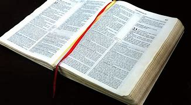

images
LA SACRA BIBBIA OSSIA L’ANTICO E IL NUOVO TESTAMENTO -----------------------
VERSIONE RIVEDUTA Versione riveduta in testo originale dal Dott. GIOVANNI LUZZI già Prof.
alla Facoltà Teologica Valdese di Roma L’ANTICO TESTAMENTO ---------------------------
VERSIONE RIVEDUTA SUL TESTO EBRAICO ---------------------------
LA GENESI ------------------- Nel principio Iddio creò i cieli e la terra. 2
E la terra era informe e vuota, e le tenebre coprivano la faccia dell’abisso, e lo spirito di Dio aleggiava sulla superficie delle acque.
E Dio disse: 3 ‘Sia la luce!’ E la luce fu. 4 E Dio vide che la luce era buona; e Dio separò la luce dalle tenebre. 5 E Dio chiamò la luce ‘giorno’, e le tenebre ‘notte’.
Così fu sera, poi fu mattina: e fu il primo giorno. 6 Poi Dio disse: ‘Ci sia una distesa tra le acque, che separi le acque dalle acque’. 7 E Dio fece la distesa e separò le acque ch’erano sotto la distesa, dalle acque ch’erano sopra la distesa. E così fu. 8 E Dio chiamò la distesa ‘cielo’.
Così fu sera, poi fu mattina: e fu il secondo giorno. 9 Poi Dio disse: ‘Le acque che son sotto il cielo siano raccolte in un unico luogo, e apparisca l’asciutto’.
E così fu. 10 E Dio chiamò l’asciutto ‘terra’, e chiamò la raccolta delle acque ‘mari’.
imagine della bibbia
un'altra imagine:

E Dio vide che questo era buono. 11
Poi Dio disse: ‘Produca la terra della verdura, dell’erbe che faccian seme
e degli alberi fruttiferi che, secondo la loro specie,
portino del frutto avente in sé la propria semenza, sulla terra’.
E così fu. 12 E la terra produsse della
verdura, dell’erbe che facevan seme
secondo la loro specie, e degli alberi che portavano
del frutto avente in sé la propria semenza, secondo
la loro specie. E Dio vide che
questo era buono. 13 Così fu sera, poi
fu mattina: e fu il terzo giorno. 14
Poi Dio disse: ‘Sianvi de’ luminari
nella distesa dei cieli per separare il giorno
dalla notte; e siano dei segni e per le stagioni e per
i giorni e per gli anni; 15 e servano da luminari
nella distesa dei cieli per dar luce
alla terra’. E così fu. 16 E Dio fece i due grandi
luminari: il luminare maggiore, per presiedere
al giorno, e il luminare minore per presiedere
alla notte; e fece pure le stelle. 17 E Dio li
mise nella distesa dei cieli per dar luce alla terra,
18 per presiedere al giorno e alla notte e separare
la luce dalle tenebre. E Dio vide che
questo era buono. 19 Così fu sera, poi fu mattina: e fu
il quarto giorno. 20 Poi Dio disse: ‘Producano le acque
in abbondanza animali viventi, e volino degli vuccelli sopra la terra per l’ampia distesa del
cielo’. 21 E Dio creò i grandi animali acquatici e tutti gli
esseri viventi che si muovono, i quali le
acque produssero in abbondanza secondo la
loro specie, ed ogni volatile
secondo la sua specie.
E Dio vide che questo era buono. 22 E Dio
li benedisse, dicendo: ‘Crescete, moltiplicate,
ed empite le acque dei mari, e
moltiplichino gli uccelli sulla terra’.
23 Così fu sera, poi fu mattina: e fu
il quinto giorno. 24 Poi Dio disse: ‘Produca
la terra animali viventi secondo la loro specie:
bestiame, rettili e animali salvatici
della terra, secondo la loro specie’.
E così fu. 25 E Dio fece gli animali salvatici
della terra, secondo le loro
specie, il bestiame secondo le sue specie,
e tutti i rettili della terra, secondo le loro
specie. E Dio vide che questo era buono.
bibbia completa
questo e il link a gods of Greek
E-mail me!
Back to top of page
{kind=link}